Contact Us
For logistical questions and concerns, please email: cs61b (at) berkeley.edu
Instructor
|
Hilfinger (at) cs.berkeley.edu
Feel free to drop by whenever my office is open and I am not singing
in a language other than English. Otherwise,
I will be in officially Tu 3-4 and
Th 4-5.
Office: Soda 787. |
Teaching Assistants
|
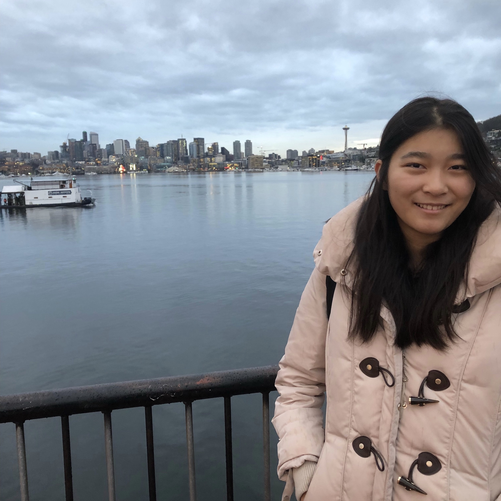
Ada Hu
adahu (at) berkeley.edu
Pronouns: she/her
Hi everyone! My name is Ada and I'm a sophomore from Los Angeles, CA. I like playing LoL, tennis, and Binding of Isaac. I also love cats! When I'm not studying, you can probably find me at Asha. |
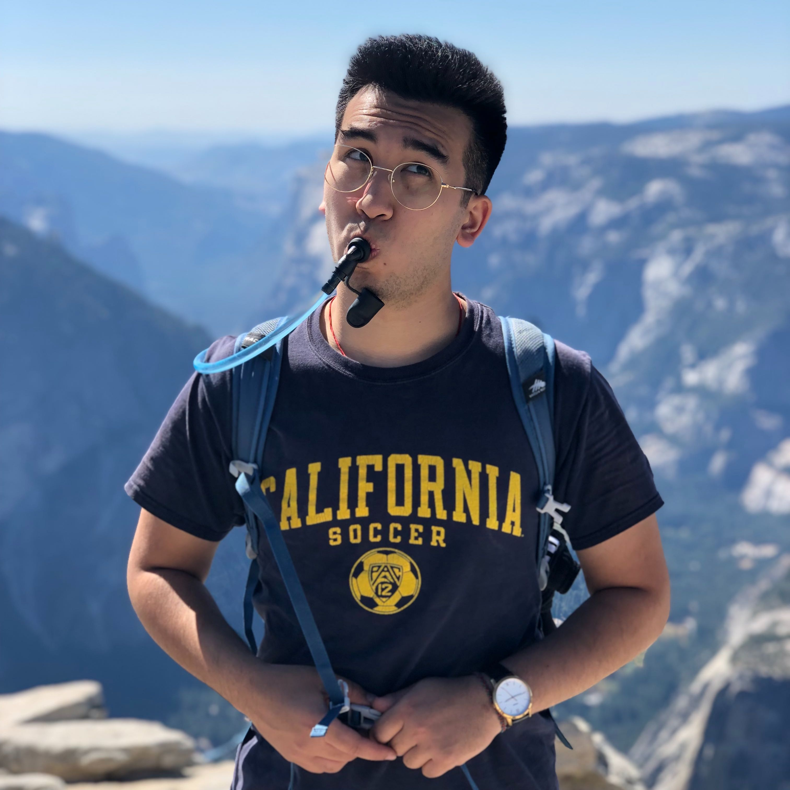
asetoodehnia (at) berkeley.edu
Pronouns: he/him/his
Hello! I'm Adel, a fourth-year Mathematics and Computer Science student from Union, New Jersey. When I have free time you could probably find me playing soccer, listening to music, playing guitar, or just catching up on sleep. If you ever need anything or just see me around and want to say hi, please don't hesitate to reach out! I'm really looking forward to meeting you all this semester :) |
 aannadi (at) berkeley.edu
Pronouns: he/him/his
Hey! I'm Akshit, and I'm from Dublin, CA and am currently a third year EECS major. In my free time, I enjoy watching a ton of T.V., eating a ton of food, and finding new classes to take at the RSF. 61B is one of my favorite CS courses I've taken so far, and I hope it'll be yours too! Looking forward to a great semester. |
|
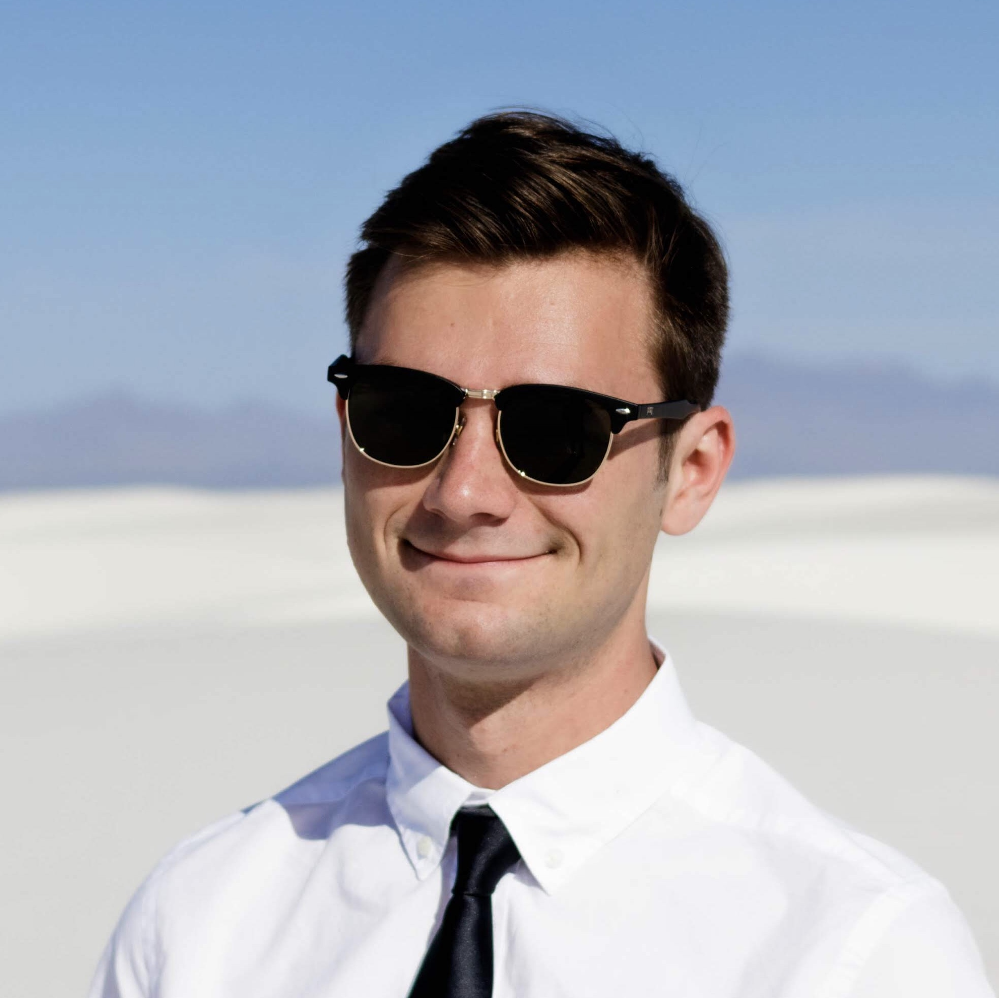
Alex Schedel
alexschedel (at) berkeley.edu
Pronouns: he/him/his
Hello! My name is Alex and I am a third year double majoring in Film and Computer Science. In my free time, I enjoy listening to music, watching lots of (really weird) films, and playing video games. Please send me songs if you have any I might like! I look forward to meeting and working with all of you! |
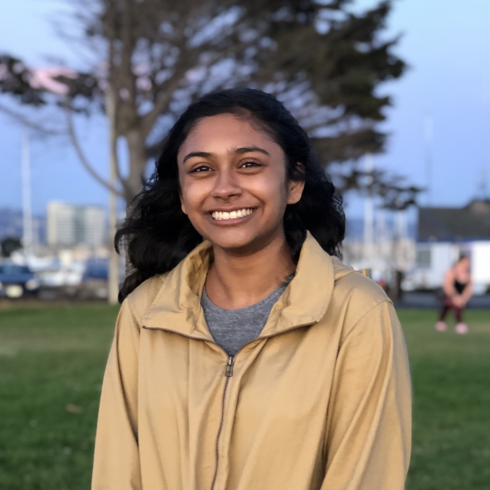
anjaliruban (at) berkeley.edu
Pronouns: she/her/hers
Hi! I’m a second year majoring in computer science and linguistics and this is my first time TAing for 61B. I love debugging, baking, and watching over dramatic TV. I’m super excited to help out this semester! |
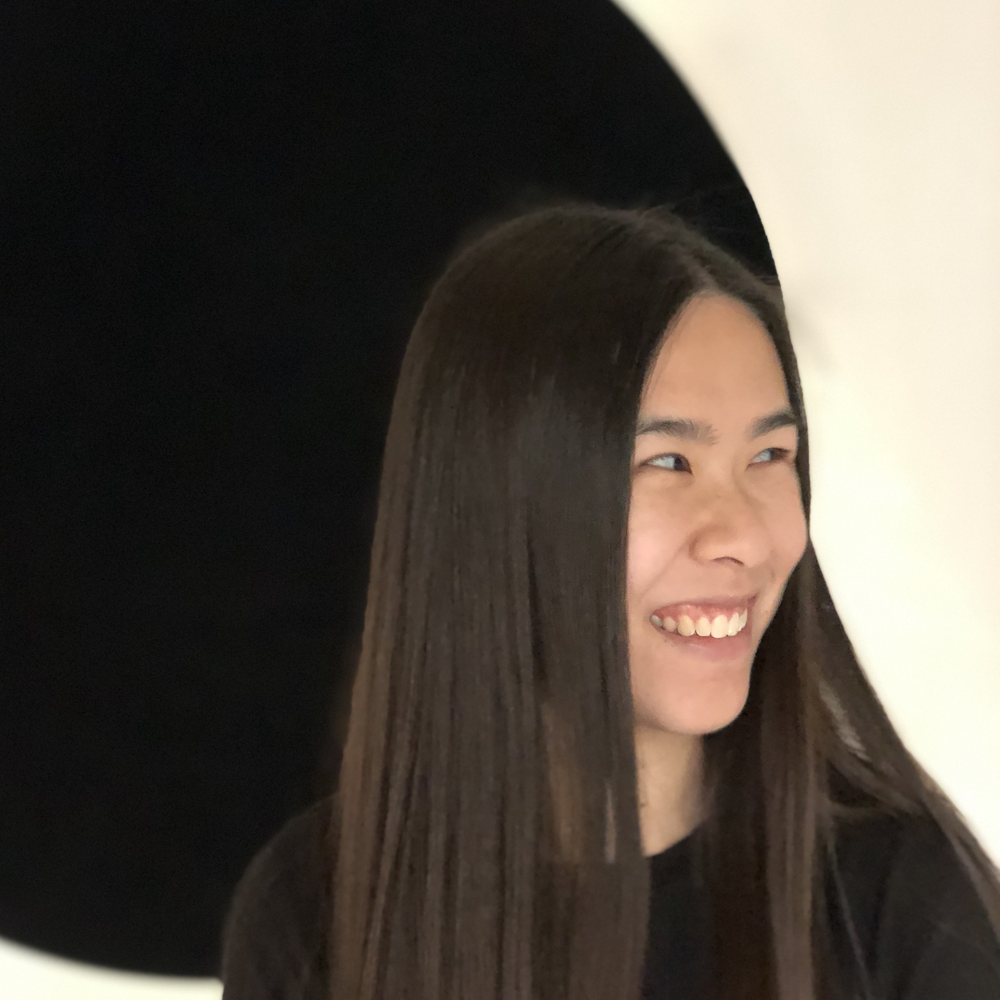
Annie Huang
anniexhuang (at) berkeley.edu
Pronouns: she/her/hers
Hello! I’m a fourth-year CS major from the Bay Area who came to Berkeley intending to major in anything but CS (but 61B changed my mind!) I love dogs, breakfast, ice cream, matcha lattes with oat milk, and wearing all black. Please come to my discussion / lab to show me photos of your dogs! |
|
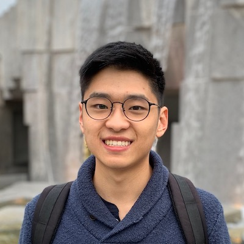
yuancheng.tsai (at) berkeley.edu
Pronouns: he/him/his
Hello! My name is Anson and I am a senior doing EECS stuff. I like watching big oof movies, munching on snacks, and browsing the memes in my spare time. If you see me around, feel free say hello! |
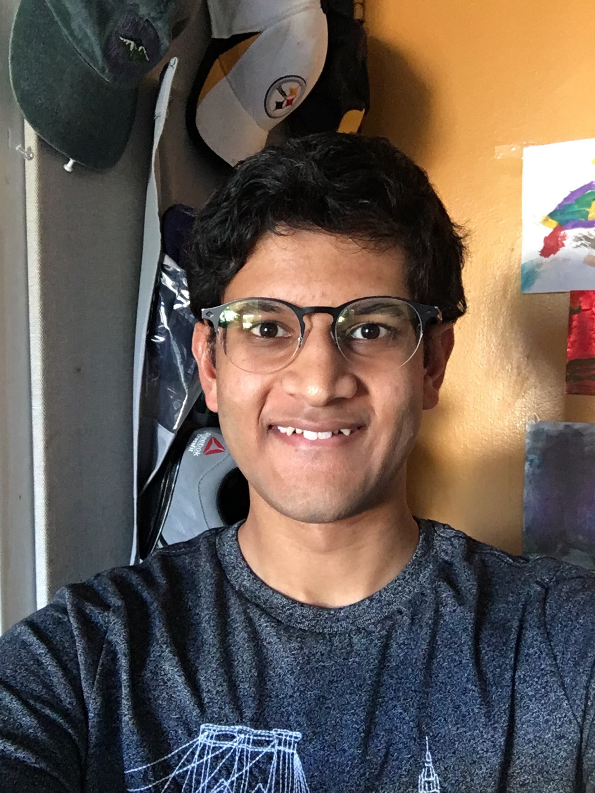
Arjun Sahai
arjunsahai (at) berkeley.edu
Pronouns: he/him/his
Hi there! I am a junior EECS student from Phoenix, AZ and I am super excited to teach CS61B this semester! Come by my section and we can have a wonderful conversation about data structures ... snacks may be provided :) |
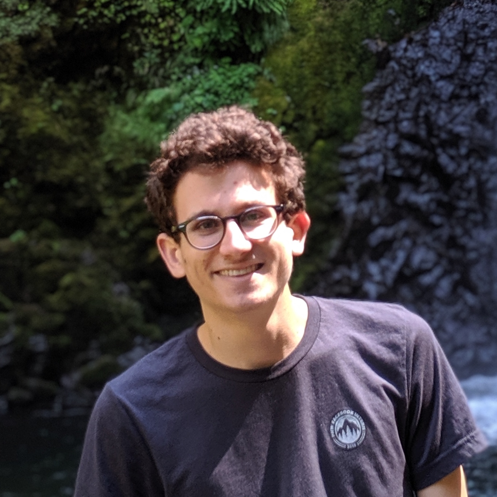
carlo (at) berkeley.edu
hi yall, come to my section for some free learning (and free snacks 👀). or come to remind me to journal so i don't break my new years resolution (oops). I'm a senior studying CS + DS and this is my 4th time teaching 61B (+ I've taught cs170 and data 8). Excited to talk with you!
|
|
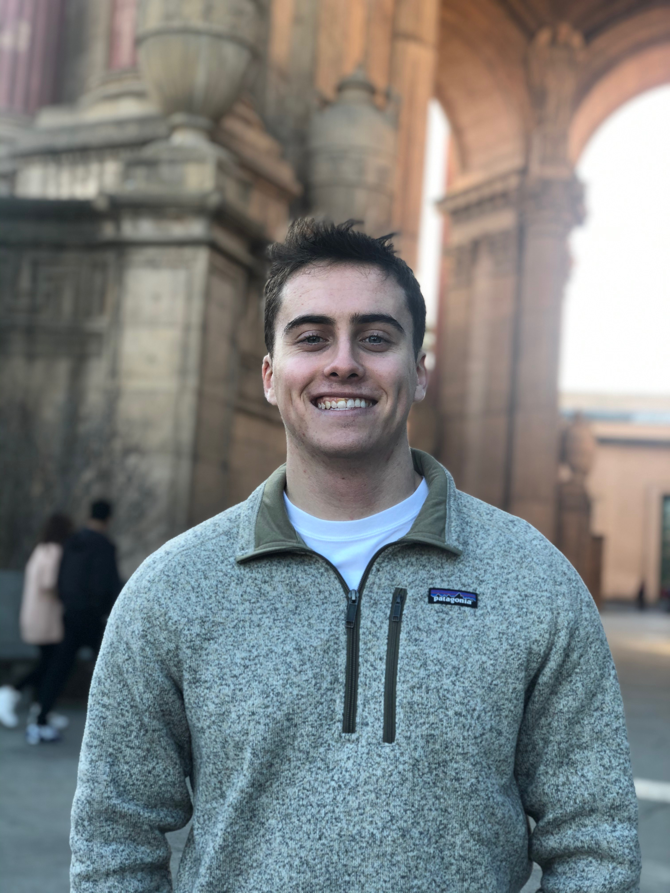
Connor Lafferty
cclafferty5 (at) berkeley.edu
Pronouns: he/him/his
Hello! I'm Connor, and I'm from Temecula, CA. I am a third year EECS major who loves film, basketball, and cooking questionable vegan foods. If you're ever in need of movie recommendations or just want to chat, please feel free to reach out! CS61B was one of my favorite classes at Berkeley, and I can't wait to work with you this semester (: |
 Darren Huang
darren.y.huang (at) berkeley.edu
Pronouns: he/him/his
Hi my name is Darren! I love beating my dear friend and colleague Arjun Sahai at smash. When I'm not destroying the hopes and dreams of my good friends, you will find me slowly jogging through the street of Berkeley training for a half marathon I might not commit to and maybe reading a nice book on data structures. I am also training to become a chef thru this amazing website known as YouTube if you ever need a good recipe or two I can send you some solid YouTube links! Looking forward to getting to know you this semester :) |
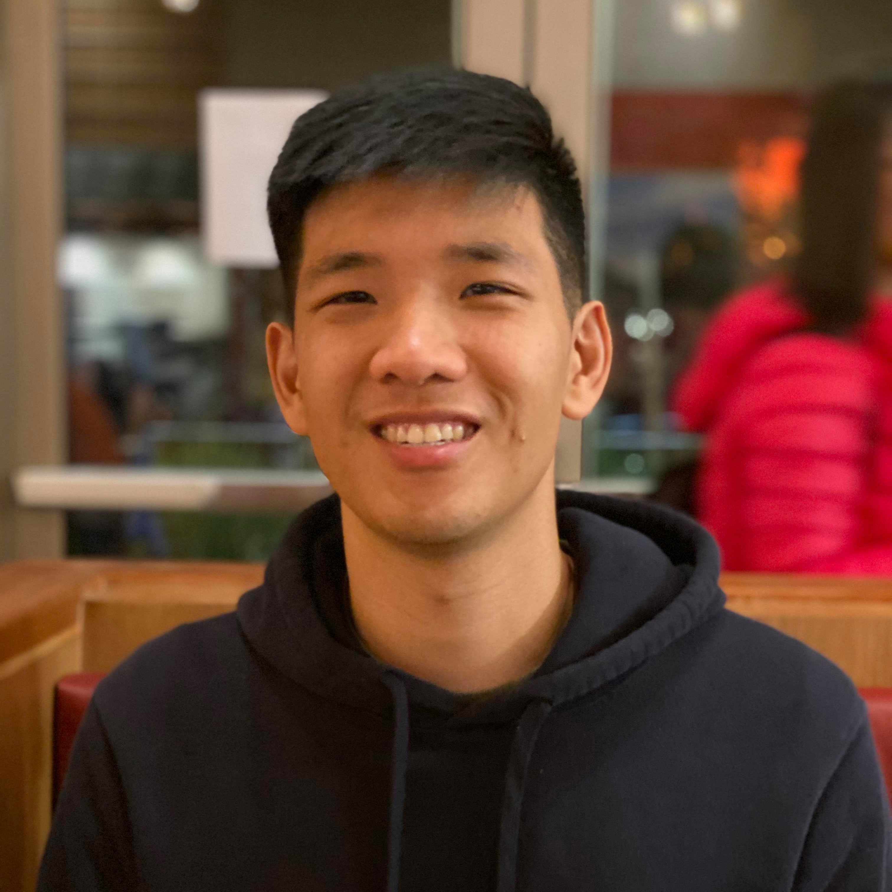
Eric Tang
erictang000 (at) berkeley.edu
Hello everyone! I'm a second year EECS major from the Bay Area. In my free time, you can find me winning fantasy basketball and eating at Chengdu Style Restaurant. I liked CS 61B a lot and hope you all do too!
|
|
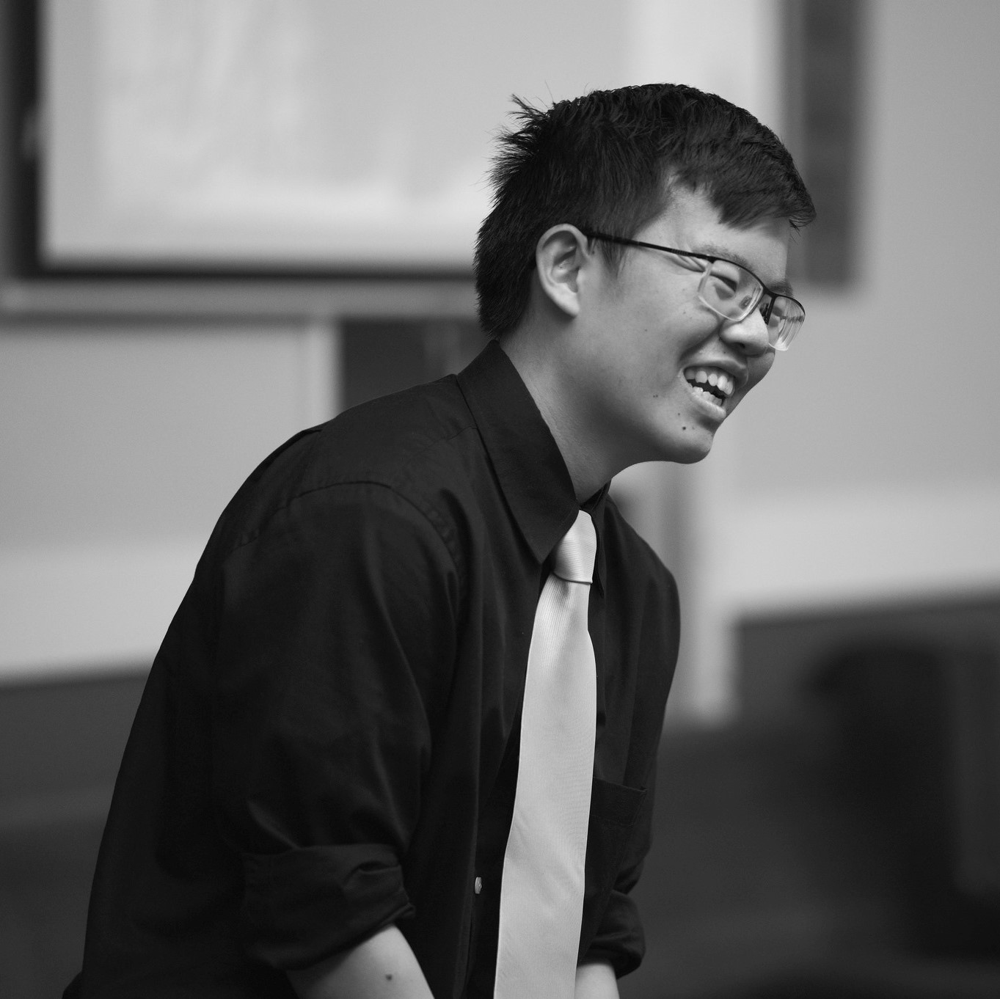
Eric Zhu
eric.zhu (at) berkeley.edu
Pronouns: he/him/his
Hello! I'm a second year EECS major from Fremont, CA. I really enjoy watching and rewatching TV shows and movies :O so let me know if you have any recommendations! I look forward to meeting you all :)) and hope you have as much fun with 61B as I did. |
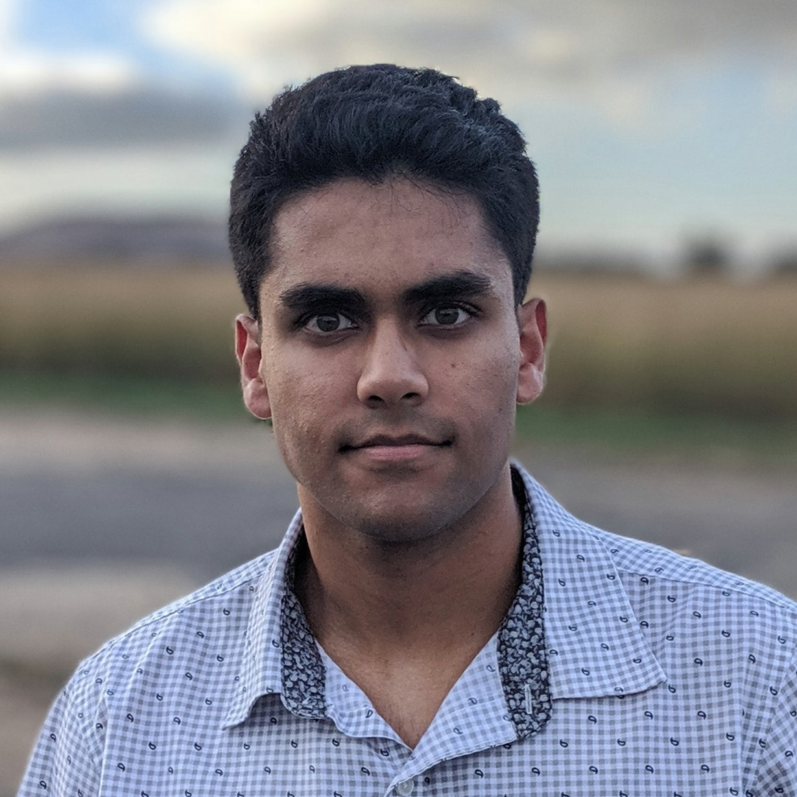
Ethan Mehta
ethanbmehta (at) berkeley.edu
Pronouns: He/Him/His
Hey everyone! My name is Ethan and I'm a second year EECS + Business student from Fremont, CA. I love to hike, play chess, and work on new juggling tricks. Here's to a great semester! Go Bears! |
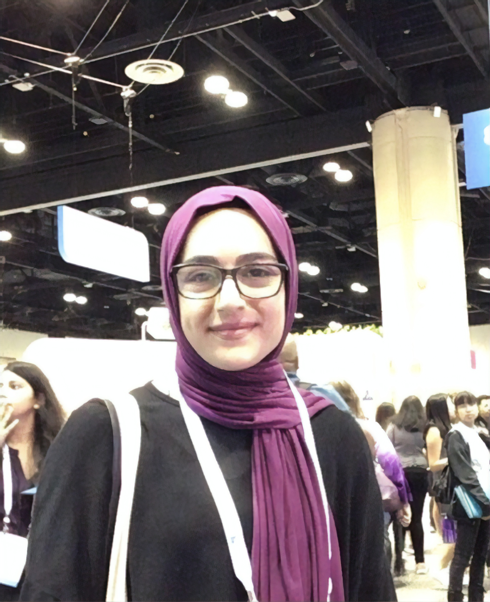
Fatema Yasini
yasinifatema (at) berkeley.edu
Hello! I'm Fatema, and I'm a third-year CS major. In my free time I like baking (banana bread), listening to music, and drinking way too much coffee. I'm super excited to get to meet all of you! If you see me around, don't be shy and say hi :)
|
|
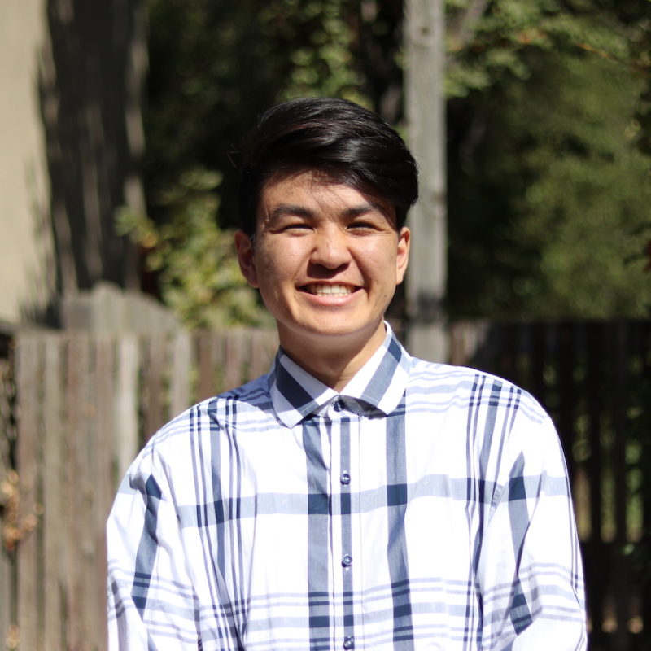
han_zhou (at) berkeley.edu
Pronouns: he/him/his
im not scary i swear...plz come to section and talk to me :') i swear im interesting |
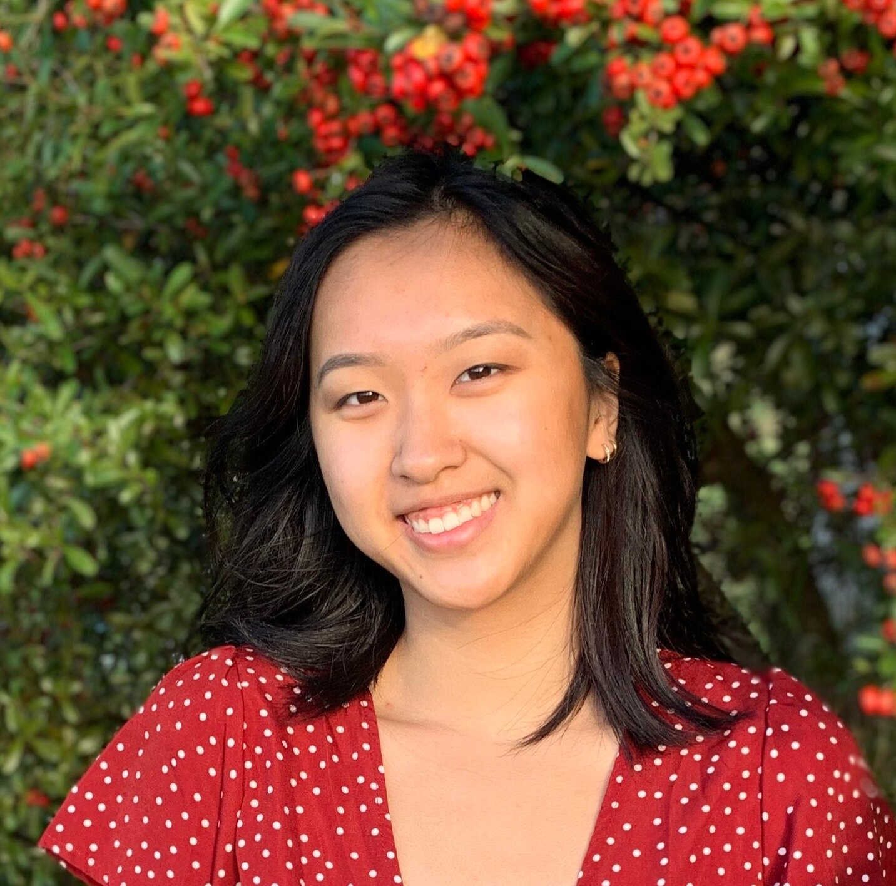
Hannah Yan
hannah.yan (at) berkeley.edu
Pronouns: she/her/hers
Hey! I'm Hannah, a 3rd year CS major from Chicago(ish), IL, and I like to ᵇᵒᵒᵍᶦᵉ ʷᵒᵒᵍᶦᵉ, sing, curate my Spotify playlists, and inhale lots of sweets. I always enjoy a good conversation about self-care/personal growth, so talk to me about your interests! Like the rest of course staff, I like 61B a whole lot, and I hope to make this class a fun and fulfilling experience for you all \ (•◡•) / |
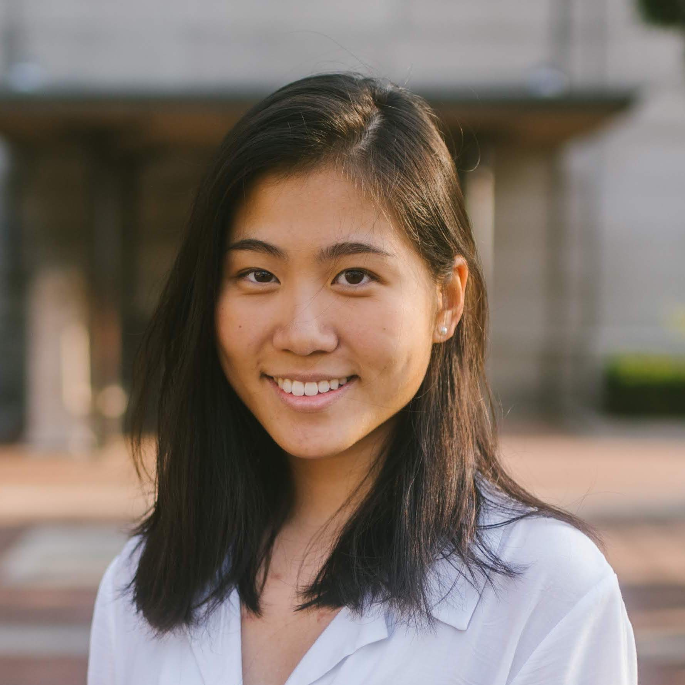
Isabelle Zhou
isabellezhou (at) berkeley.edu
Pronouns: she/her
Hi there! I'm a sophomore EECS + Business student from Maryland (DC suburbs). My hobbies include playing cards, tennis, and eating food :) 61B has been one of my favorite classes by far, and I'm super excited to teach it! Please feel free to reach out to me if you ever have any questions (isabellezhou@berkeley.edu)! |
 Itai Smith
iasmith (at) berkeley.edu
Pronouns: he/him/his
Hi there! My name is Itai and I'm a fourth year CS major and this is my 4th time teaching CS 61B! When I'm not doing school work or teaching, you can find me traveling around the Bay Area, listening to 70s music, eating cookies, and just thinking about life. CS 61B was one of my favorite classes, so I hope to make it a fun experience for you as well! Feel free to come talk to me about anything! |
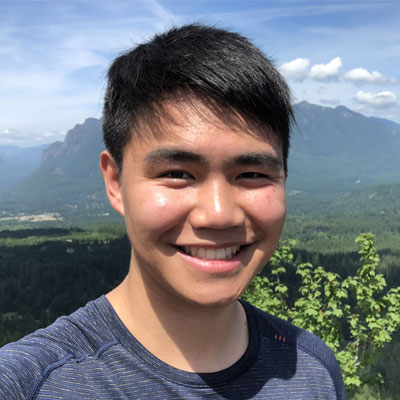
joshua.yang (at) berkeley.edu
Pronouns: he/him/his
Hi! I'm Josh, a third year CS and Music major from Vancouver, Canada. In my free time, I enjoy hanging out with friends, watching sad anime, taking fat naps, playing tennis, and jamming out on piano to some hip jazz tunes and pop classics alike. I look forward to getting to know you, and I hope you enjoy all that 61B has to offer! |
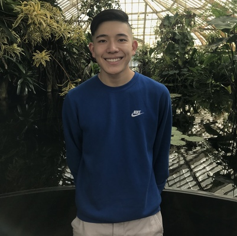
Julian Kung
julianrkung (at) berkeley.edu
Pronouns: he/him/his
Hi! I'm a third year CS major from the Bay Area and this is my third time teaching 61B! Come hang out with me during my discussions and labs and we can talk about how cool and useful data structures and graphs are. EVERYONE I know is going to discussion and lab BUT you, so you should go. :) |
|
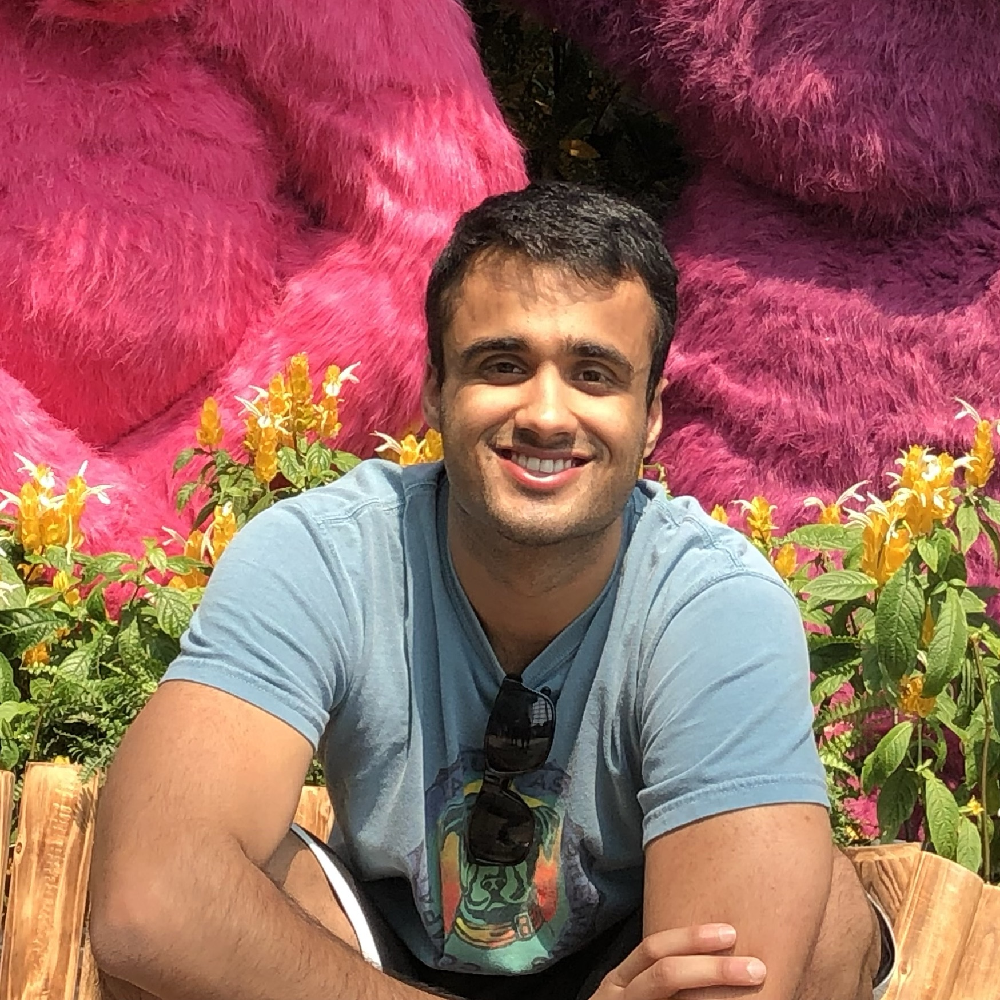
kapurkartik (at) berkeley.edu
Pronouns: he/his/him
I am currently in a battle to change the shape of Honey Nut Cheerios from "O" to "H" in order to prevent confusion with their much less tasty cousin normal Cheerios ( Here for more details ). If you want to hear more ideas feel free to make a piazza post, stalk me on twitter, or come to my section |
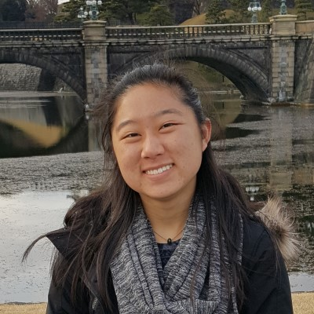
Kelly Lin
kellymlin (at) berkeley.edu
Hello! I'm a fourth year EECS major from Irvine, CA. In my free time I enjoy playing piano, composing music, running, and playing jugger. 61B was one of my favorite classes here, so I hope you enjoy it as much as I did :)
|
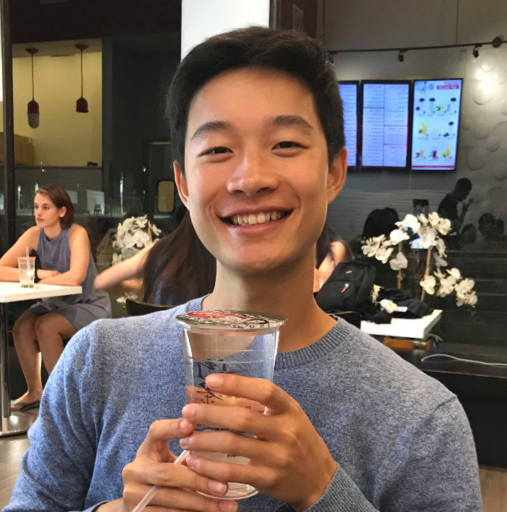
Kevin Wang
kevinwang27 (at) berkeley.edu
Hello everyone! I'm a third year EECS student from Virginia who enjoys playing hockey, sleeping way too much, and ordering water from boba shops. I hope I can help you all appreciate why 61B is such a great class this semester!
|
|
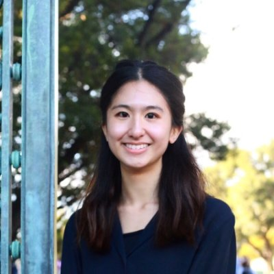
Lauren Hong
lauren.hong (at) berkeley.edu
I love data structures as much as I love coffee.
|
 Linda Deng
deng22 (at) berkeley.edu
Pronouns: she/her/her
Hi! I am Linda. I am very excited to be TAing for 61B this semester. In my free time, I love cooking and trying out new restaurants (Imm Thai is my fav at Berkeley). Also, I enjoy classical ballet and modern dance. CS61B is one of my favorite CS courses, and I hope it will be yours too! Looking forward to a great semester with y'all! |
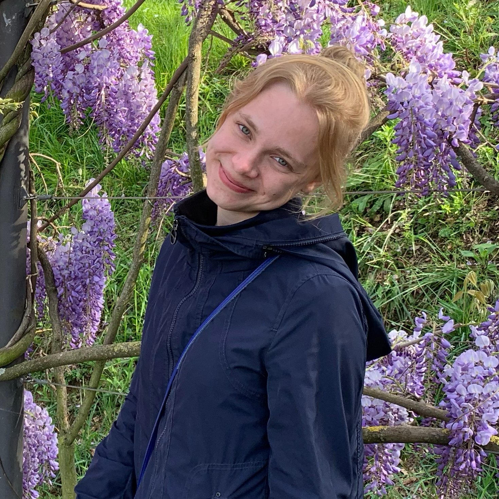
Lotta Meriluoto
lmeriluoto (at) berkeley.edu
Pronouns: she/her/hers
Hiii! I’m Lotta, a fourth-year CS major from the splendidly forgettable state of New Jersey! I love 61B! ...and turtlenecks, each and every dog, and almond butter, and I never left my One Direction phase, oops. May or may not try and bribe you to come to section with vegan baked goods. Feel free to reach out whenever! :-) |
|
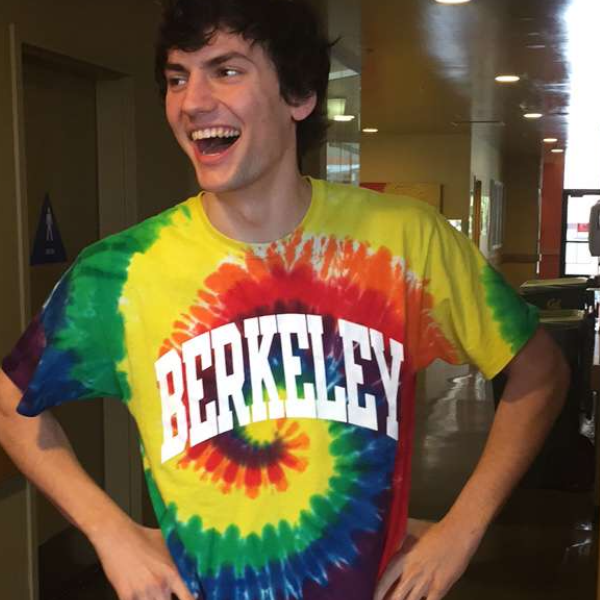
Matt Owen
omatthew98 (at) berkeley.edu
Pronouns: he/him/his
hello party people, come to my section so i can teach you cool things and some computer science. some of my interests are lower case letters, board sports, cooking / food, photography, and music. come find me and i would love to get to know you this semester! |
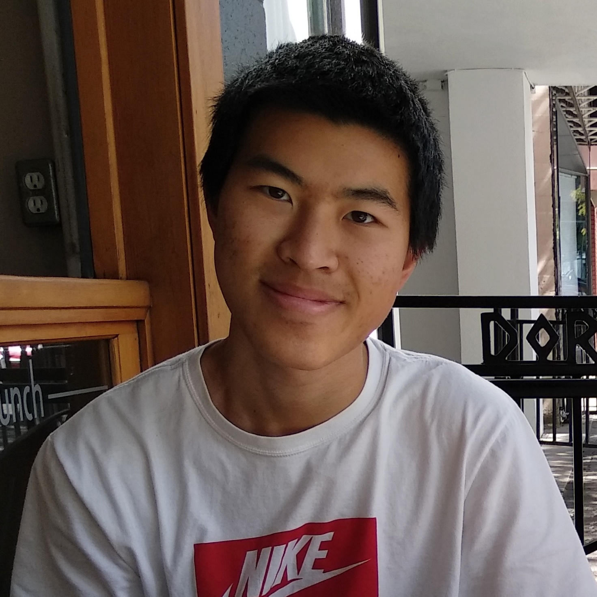
Michael Qi
michaelqi (at) berkeley.edu
Talent is something you make bloom. Instinct is something you polish!
|
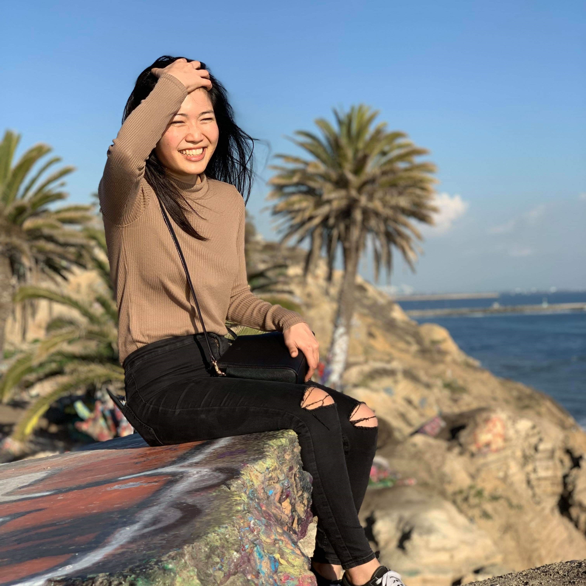
Michelle Hwang
mhwangc (at) berkeley.edu
Pronouns: she/her/hers
I love Trader Joe's Ghost Pepper Potato Chips. |
|
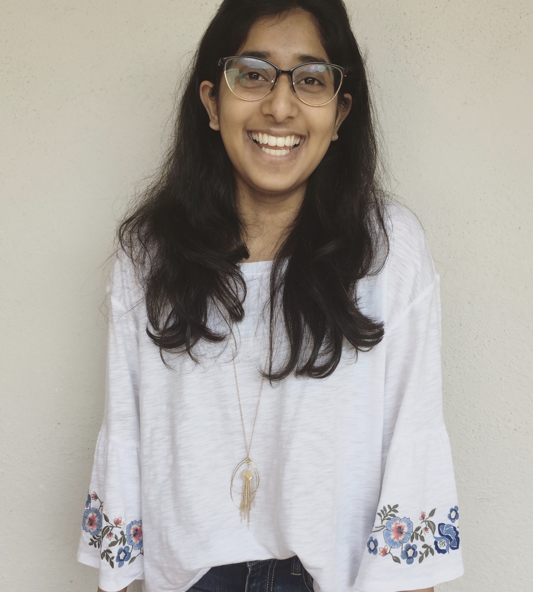
Mounica Putrevu
mounicaputrevu (at) berkeley.edu
Hi! I'm Mounica, a fourth year CS major from the Bay Area. When I'm procrastinating studying you'll find me tagging people in memes and singing along to indie pop :) 61B was one of my favorite classes at Berkeley, and I hope you'll enjoy it just as much!
|
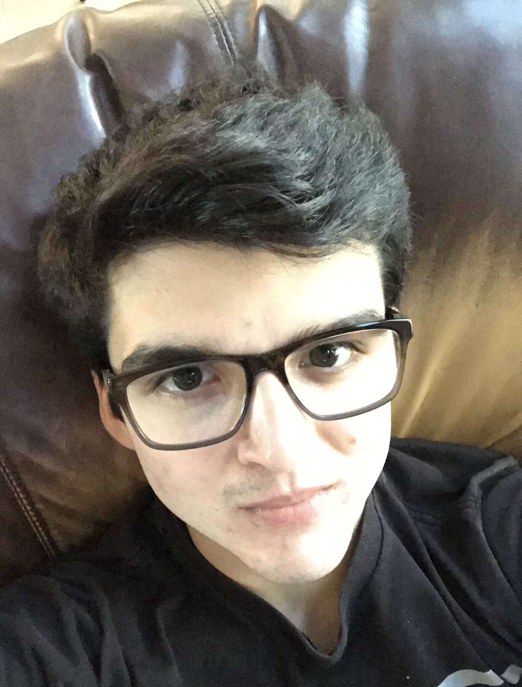
Nathan Miller
nathan_miller23 (at) berkeley.edu
Pronouns: he/him/his
Hi! I'm a third year CS major with a focus on ML and data science. This is my fourth semester teaching 61B, and as excellent as the profs are, I find I learn even more from teaching you, the students, in section and office hours. My hobbies include HashMaps, pondering the meaning of life at Moffit at 4am, and Chipotle burritos. If you ever have any questions about course material, machine learning, or even life, feel free to reach out to me! |
o.k (at) berkeley.edu
Pronouns: he/him/his
Hello everyone! I'm a Junior EECS student from Sonoma county and this is my 4th semester with the course! Feel free to shoot me an email at o.k@berkeley.edu if you have any questions about the course or any CS related things, or come by my office hours. Learn lots, this is a great course! |
|
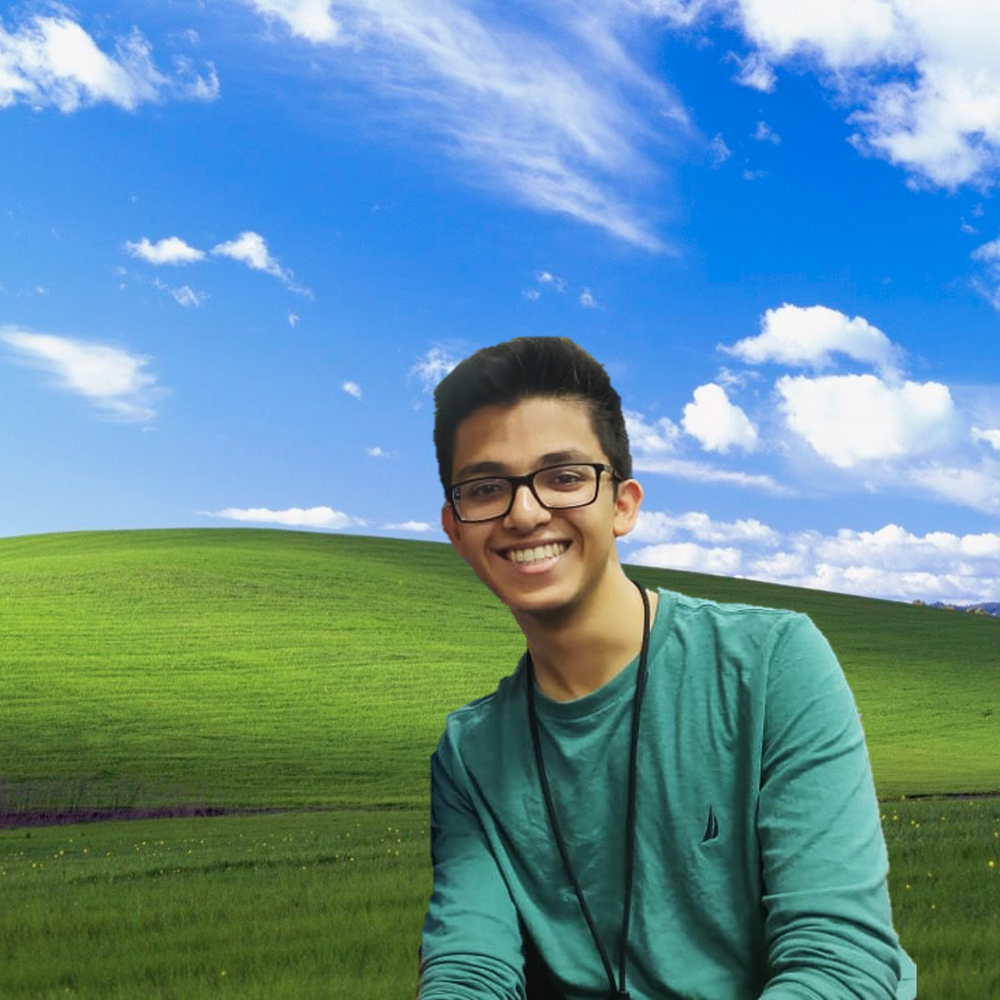
Rahul Hayaran
rahul.hayaran (at) berkeley.edu
Pronouns: he/him/his
Howdy! I'm Rahul, a sophomore studying EECS+Business from Dallas(ish), TX. I find happiness in data, cooking, fantasy sports, and word play. If you ever want to chat--about 61B or life--please reach out! |
 Ryan Nuqui
ryannuqui (at) berkeley.edu
Pronouns: he/him/his
Hi everyone! I'm a third year CS major and in my free time, I like to play board games with friends, walk aimlessly in cities, and watch Ted talks to justify my procrastination. 61B was one of my favorite classes and I hope you enjoy it as well! Feel free to ask me anything! |
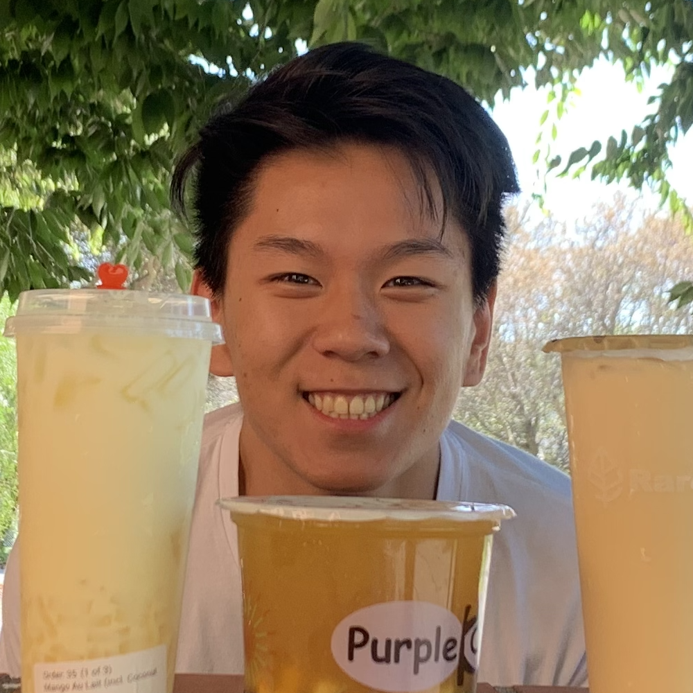
Ryan Tseng
ryantseng (at) berkeley.edu
Hi everyone! I'm Ryan and I'm a 3rd year CS major from Cupertino. CS 61B is one my all time favorite classes, and I'm excited to be back as a TA. Outside of class you can catch me at the RSF playing badminton, so don't hesitate to say hi if you see me!
|
|
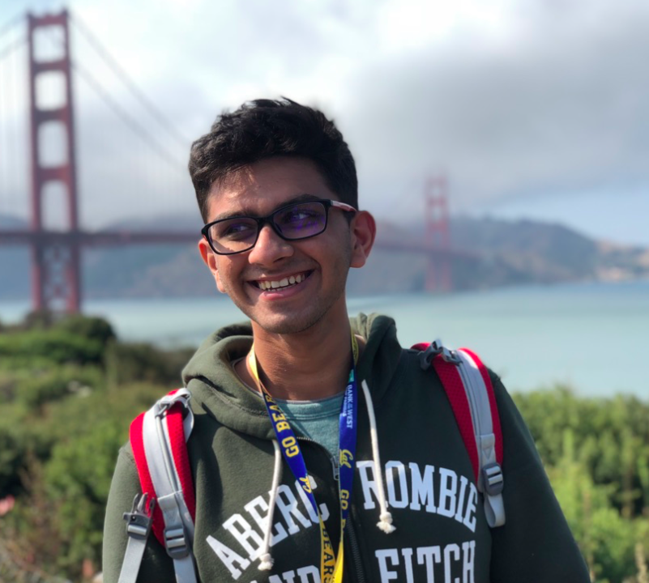
Sarthak Arora
sarthakarora (at) berkeley.edu
Pronouns: he/him/his
Hello! My name is Sarthak and I'm a second year CS major from Singapore! In my free time, I love watching Netflix, going to the beach, and playing cricket. 61B has been my favourite class here at Berkeley so far and I hope I can help in making the class a great experience for all of you! Feel free to reach out to me regarding absolutely anything and let's make this semester a fun one! |
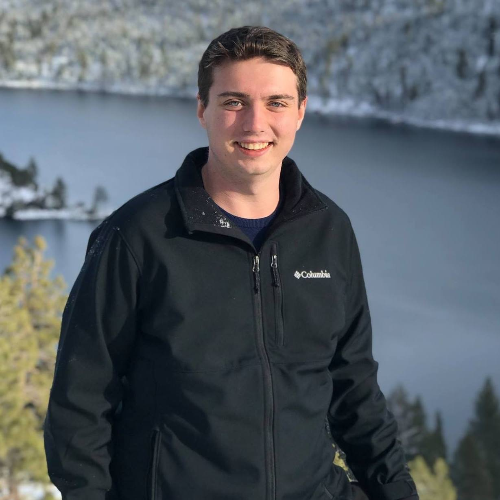
Sean Dooher
sean.dooher (at) berkeley.edu
Pronouns: he/him/his
Hi everyone! I'm a senior born and raised in the Bay Area. In my free time I like to cook, hike, and attempt to live up to the expectations of my younger self. My focus in CS has been on lower level programming and security. Feel free to reach out to me if you need any help or just want to chat! |
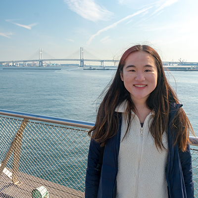
Sharie Wang
sharie (at) berkeley.edu
Hi! I'm Sharie, a 4th year CS major from the poppin' 626. I am a ~huge~ consumer of content (music, artsy food photography, thriller/drama shows, ...the list goes on) and snacks from Trader Joe's!
|
|
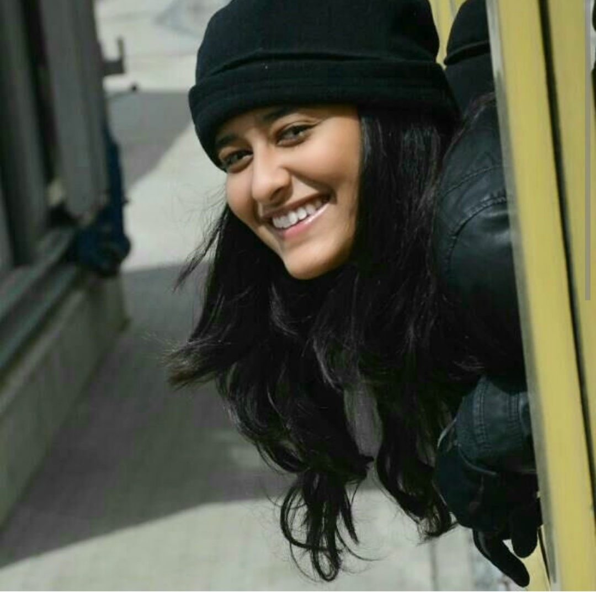
Shivani Kishnani
shivanik (at) berkeley.edu
Pronouns: She/her/hers
Hello hello! This is my first time teaching 61B, though I have taught 70 before, and I'm very excited to meet you all! I enjoy doing robotics research*, annoying my friends, dog spotting, reading, and defending ketchup against the masses (someone has to do it). I have plants named Tree Diddy, Wet and Wild, and Succleberry Finn, and that's probably the most important thing about me. My favorite movie is Shutter Island, favorite restaurant here is crepevine, and my favorite sea creature are sea turtles. All of this information is relevant for the final. Please come say hi and I hope you have the nicest semester! *the 0.05% of the time that it works |
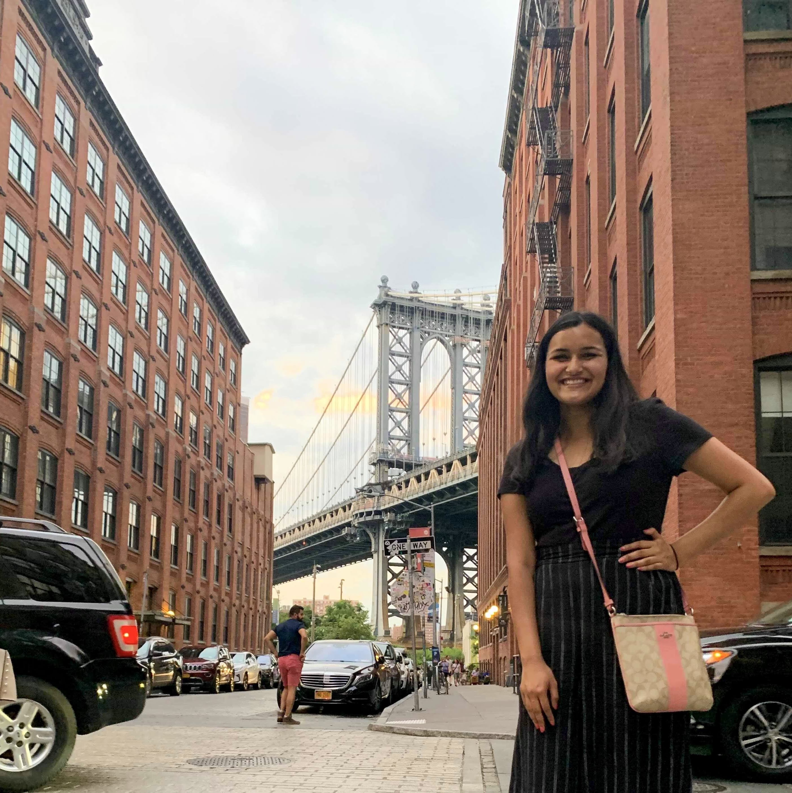
Shreya Sahoo
shreyasahoo (at) berkeley.edu
Pronouns: she/her/hers
Hello! I'm a 4th year CS student from Sacramento, CA. I'm a fan of cheesy movies, cooking new recipes, and hiking. Other than CS 61B, I have also TAed CS 61A. I really liked CS61B and hope that you enjoy the class too! :') |
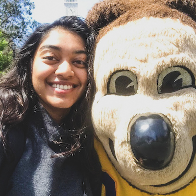
shubhaj (at) berkeley.edu
Pronouns: she/her/hers
Hey hello! I'm a third-year EECS major with a passion for impacting the arts and education through technology and entrepreneurship. Teaching CS61B has been my favorite part of Berkeley thus far and I'm so excited I get to work with and grow alongside you all this semester! In my free time, I like to tinker with stringed instruments, watch sci-fi movies, stargaze, and hike around. |
|
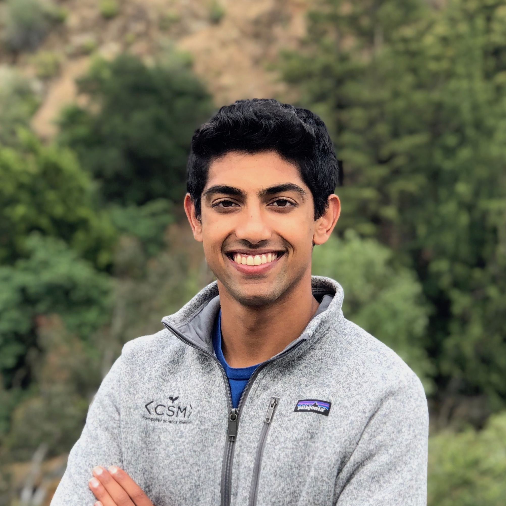
Sohum Hulyalkar
sohum11 (at) berkeley.edu
Pronouns: he/him/his
How are you doing? My name is Sohum and, as you could probably tell, I love to teach, especially 61b! In my free time, you can find me playing ultimate frisbee, going on hikes, or just chilling with friends. I love the Baltimore Ravens, persimmon, and bananagrams. Finally, I'd love to get to know you, so feel free to shoot me an email! |
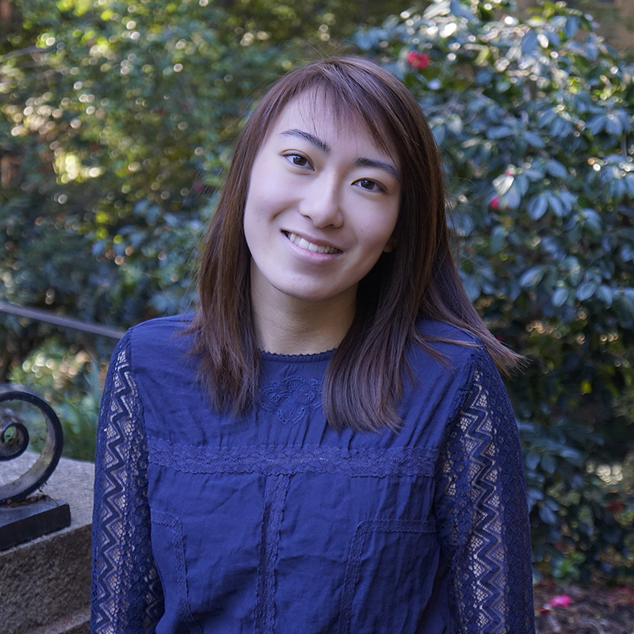
tinazhao (at) berkeley.edu
Pronouns: she/her/hers
Hello there! I'm a CS major from Arcadia, CA. I enjoy taking long naps in the afternoon and watching cooking videos. I like making friends, so come say hi! |
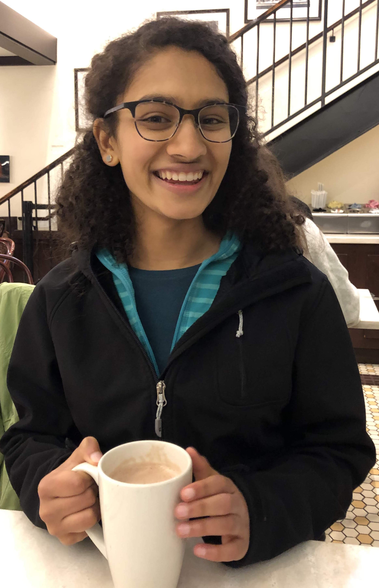
Vibha Seshadri
vibhaseshadri (at) berkeley.edu
Pronouns: she/her/hers
Hey everyone! My name is Vibha, and I am a fourth year Computer Science major. I'm really excited to work with y'all this semester! Feel free to reach out about anything! |
|
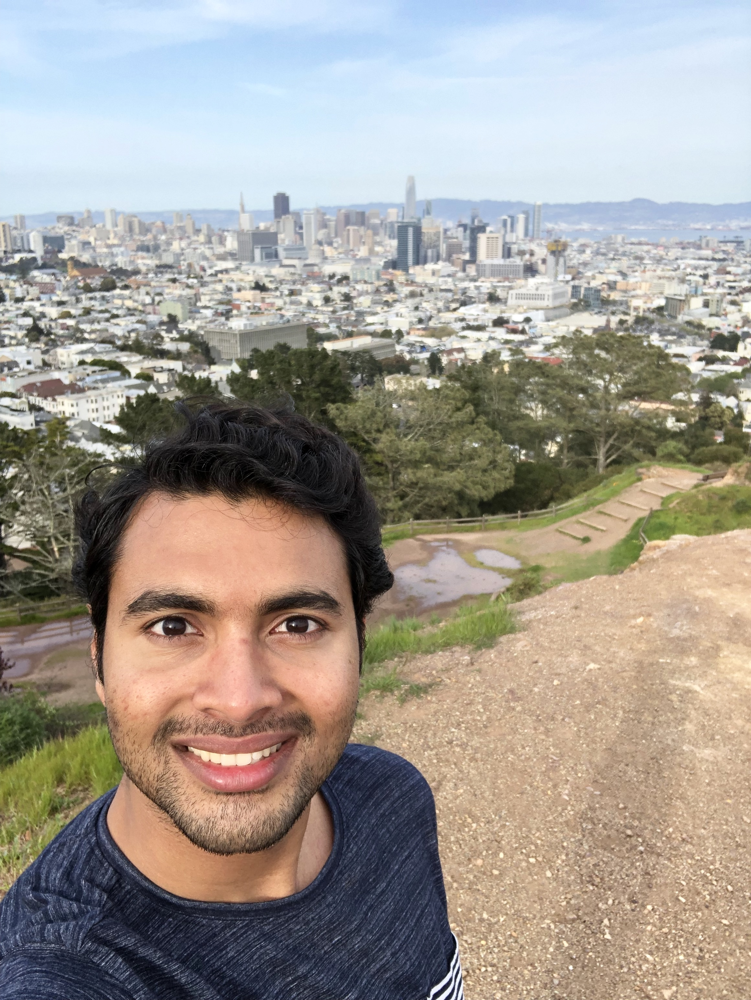
Vivant Sakore
vsakore (at) berkeley.edu
Pronouns: he/him/his
I’m a graduate student at Cal and I have worked in the software industry for 4 years. When not at the university, I like hikes, beaches, exploring the city and spending time with my friends. My fav restaurant in Berkeley would be Imm Thai. |
 hwang97 (at) berkeley.edu
Pronouns: he/him/his
hi I'm will. im a 4th year in the eecs department with a background in computer systems. super excited to be teaching 61b this semester! |
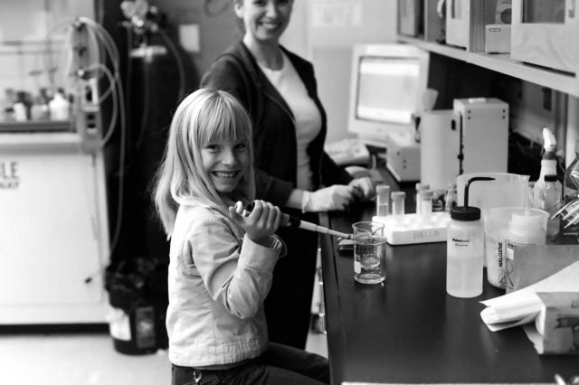
Zoe Plaxco
zap.plaxco (at) berkeley.edu
Pronouns: She/Her or They
I am a fourth year Computer Science major gearing up for my masters in CS education. I have been to 93 countries and I love making bread from scratch. |
{kind=link}
Tutors
|
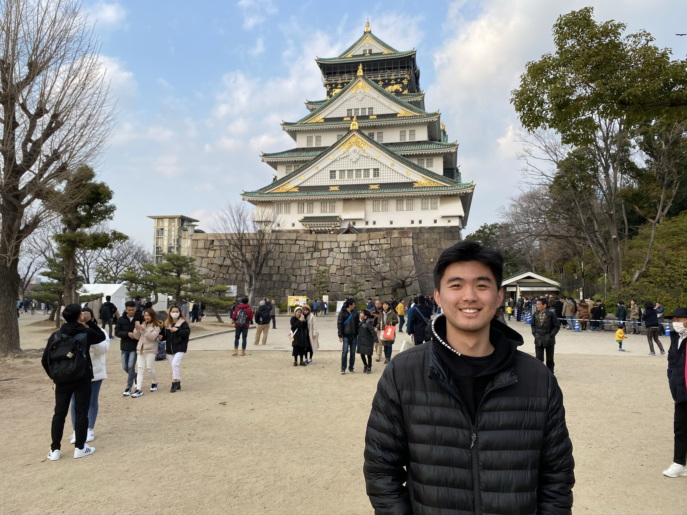
Andy Bao
andybao (at) berkeley.edu
Pronouns: he/him/his
I am currently a junior CS major from New Zealand. Some of my hobbies are playing soccer (FC Barcelona fan), skiing, and traveling. This was the class that made me decide to switch to CS - so I to help to make it as enjoyable for you. Feel free to reach out to me/say hi! |
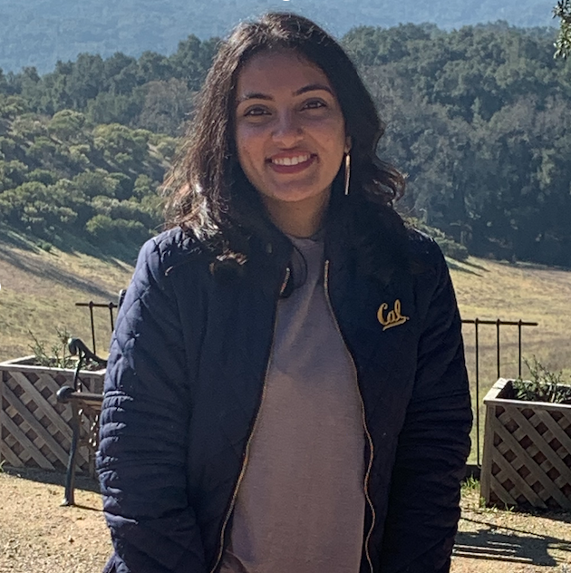
Aneri Shah
aneri.shah (at) berkeley.edu
Hi! I’m a second year EECS major from the Bay Area. I love hiking, dancing, and trying new foods. 61B was one of my favorite classes here and I hope you enjoy it as well :) Looking forward to the semester!
|
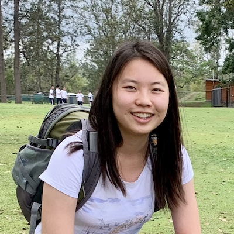
Angela Liu
aliu917 (at) berkeley.edu
Pronouns: she/her
Hey! I’m Angela and currently a second year studying CS. I’ve lived in the Bay Area my entire life and I love it here! When I’m not studying, I like to read, play golf, travel, and eat Asian desserts. CS 61B has been my favorite class so far, so I hope you all love it too! |
|
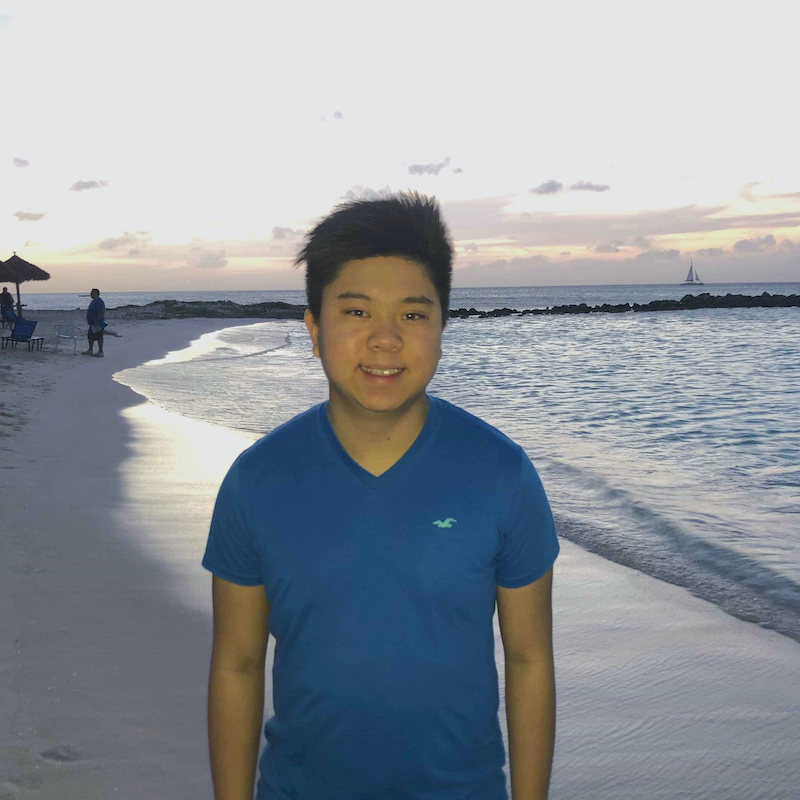
anthonyding (at) berkeley.edu
Pronouns: he/him/his
Hi everyone! I'm a second year EECS major from Saratoga, CA. Some things I like: Liverpool, making websites, (astro)physics, composing music, and data structures. Looking forward to a great semester! |
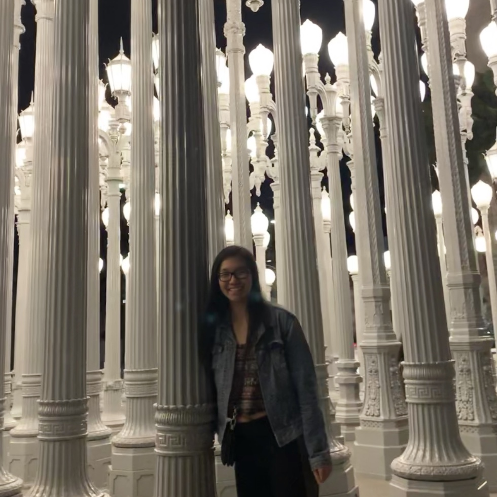
Caitlin Phan
cait (at) berkeley.edu
Pronouns: she/her
Hi y’all. I’m a 2nd year studying cs. If I’m not sleeping or busy with school stuff, you can probably find me at Trader Joe’s or some random spot with a good view of the sunset. |
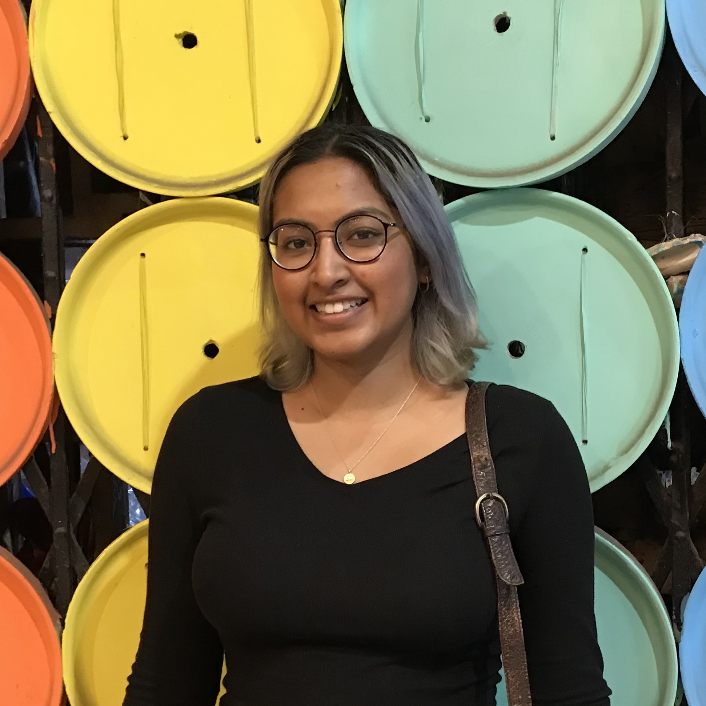
Chirasree Mandal
chirasreemandal (at) berkeley.edu
Pronouns: she/her/hers
Hey y'all! I'm a second year Computer Science major from Evanston, Illinois (the town in Mean Girls). I love design and computational biology. You can also ask me about iconic reality tv and the best snacks at Trader Joe's. Can't wait to have a great semester with you all in 61B! |
|
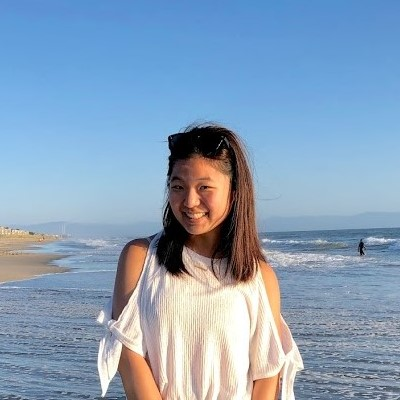
cindyxzhang (at) berkeley.edu
Pronouns: she/her/hers
Hi! I'm a sophomore studying Computer Science. Outside of academics, one of my main hobbies is wushu (Chinese martial arts). I also love spontaneous adventures, or more specifically, I have an unhealthy obsession with going to the beach. Feel free to contact me about anything and everything! |
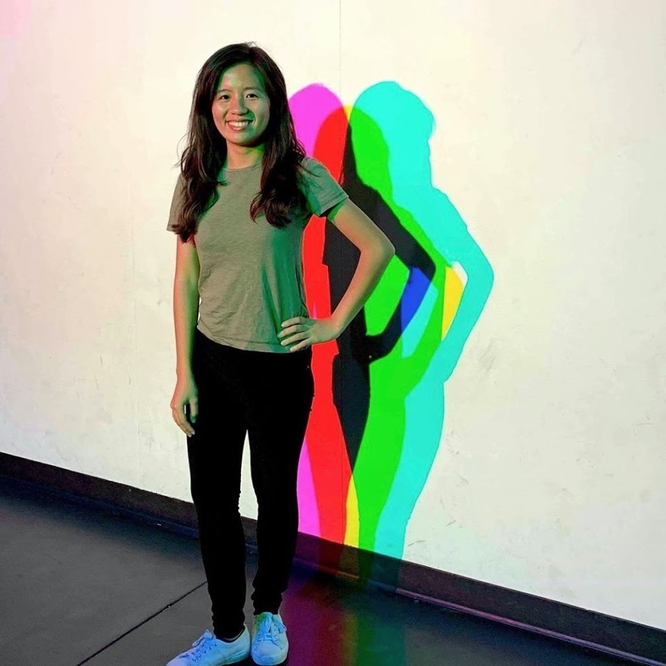
Claire Ko
clairemwko (at) berkeley.edu
Pronouns: she/her/hers
Hey guys! My name is Claire, and I’m a junior majoring in Engineering Math and Stats from SoCal. I enjoy coffee, tea, writing and learning the names of the random cats that live on my street. I’m excited to help you learn and have fun in this class! |
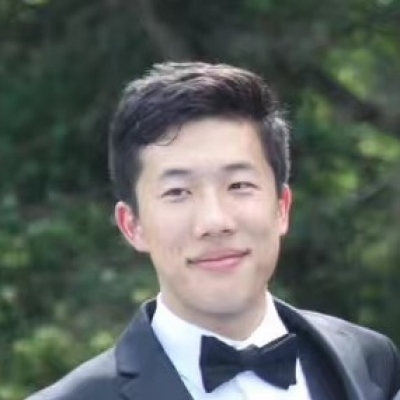
Clark Wang
clwang (at) berkeley.edu
Pronouns: he/him/his
Hey! I'm a CS major from NJ and I love running and doing outdoors things. I also really like data structures! I had a blast taking CS61B and I hope to have an even bigger blast tutoring CS61B. |
|
Danji Liu
daniel-eg2501 (at) berkeley.edu
Hi I’m Danji, Sophomore CS. 61b is easily one of my favorite classes. I hope you enjoy it as much as I do! I love getting boba with my friends. I love doggos too! Hit me up if you wanna hang out and have a great semester :)
|
David Shau
davidshau22 (at) berkeley.edu
Pronouns: he/him/his
Hey everyone! I'm a sophomore studying EECS and Business from Palo Alto and I love basketball, swimming (used to do club), video games, and messing around with friends late at night. I also love to travel and try new foods/experiences so if you have any recommendations on either of these things I'm down to hear about it! Super excited to work with you all, and feel free to reach out and talk to me about anything! |
dylantran (at) berkeley.edu
Pronouns: he/him/his
Hi! My name is Dylan, and I'm a second year CS major from the Bay Area. In my free time, I like learning new piano songs, traveling, spending time outdoors, watching food videos, and getting boba too often. Super excited to be tutoring for 61B again this semester uwu ! |
|
Eric Fu
ericfu (at) berkeley.edu
Pronouns: he/him/his
Hi! I'm a Junior CS major from the Chicago area. In my free time, I enjoy Netflix marathons, wushu, video games, and learning about economics and other social sciences. I look forward to working with everyone this semester! |
Gavin Groode
ggroode (at) berkeley.edu
Pronouns: he/him/his
Hi I am a second year Physics and Computer Science Major! I live in Los Angeles and love to ski (which doesn't really work out weather wise). I also love dogs, swimming and laying on my couch when hanging out with friends. Also escape rooms are cool, if you get the chance I would try at least one. Feel free to talk to me about pretty much anything, and welcome to 61B :). |
Grant Han
granthan (at) berkeley.edu
Hello! I'm Grant, a third-year CS major from Los Angeles, CA. Come talk to me about things to do in LA, food in LA, why LA is better than SF, or basically anything (61B is cool too, I guess).
|
|
Jack Wang
jack.y.wang (at) berkeley.edu
Pronouns: he/him/his
hey! I'm a 3rd year eecs major from santa barbara. outside of studying, i enjoy watching sunsets, late night food runs, banana chips from berkeley bowl, sports, and jamming to spotify. i'm looking forward to getting meet and teach you all! |
 Jacob Haddad
j.haddad (at) berkeley.edu
Pronouns: he/him/his
Hey there! I'm a third year EECS student from Palmdale, CA. My normal day outside of school involves countless hours on my PS4 and watching the Lakers whenever they are on TV. CS 61B is, by far, my favorite class I have taken at Cal. Can't wait to meet you all and help you learn a lot this semester! |
Jay Kakkar
jaykakkar (at) berkeley.edu
I’m an international student from London who loves to play soccer and play music! I’m a math and Cs double major and I am therefore a huge fan of coffee.
|
|
serenade092 (at) berkeley.edu
Pronouns: she/her/her
Hey, my name is Jennifer and I hail from Toronto, Canada. I'm currently a sophomore majoring in CS & Applied Math and minoring in Music. My favourite things to do include playing PUBG(currently Diamond going for Crown), drinking boba, and collecting fragrances. In case you're wondering, I'm holding a pineapple in that picture because pineapples are great and should go on pizza any time of the day ;) Looking forward to know y'all and let's have a good semester together! |
Mantej Panesar
mantejpanesar (at) berkeley.edu
Pronouns: he/him/his
Hi! I’m Mantej and currently a second year studying Computer Science. In my free time, I enjoy listening to music, cooking, hiking, and rewatching Psych. I had a great experience in 61B and hope you all do too. Looking forward to this semester! |
micahtyong (at) berkeley.edu
Pronouns: he/him/his
Hi, I'm Micah! I'm a second year studying Computer Science and Data Science. In my free time, I develop mobile apps, work on random projects, cook different recipes, and make vlogs! Places you might find me: a boba shop like Happy Lemon, a coffee shop like Sodoi, a study area like BWW, or somewhere else completely random! |
|
Oscar Ortega
oscar.g.ortega.5 (at) berkeley.edu
Pronouns: he/him/his
Hi Everyone! I'm Oscar, I'm a 4th year CS Major from South Lake Tahoe, and I love the snow. When I'm not living and breathing CS, you will often find me listening to music, playing games, running, playing basketball, or sleeping. CS61B was my one my favorite classes at Cal and I'm excited for the opportunity to meet you all and hope you all enjoy the class too:). Feel free to contact me or say hi! |
Robin Qiu
rqiu (at) berkeley.edu
Pronouns: she/her/hers
Hi! I’m a second-year EECS major and Linguistics minor. I like mac and cheese, mini crosswords, writing, and hiking. 61B is one of my favorite classes at Berkeley, and I hope you’ll like it too! Looking forward to a great semester :) |
Sameer Saptarshi
sameer.saptarshi (at) berkeley.edu
Pronouns: he/him/his
Hi everyone! I'm a third year studying EECS and Statistics! 61B was one of my favorite classes and I'm very excited to be tutoring this semester! Feel free to talk to me about anything, especially music, food, and of course, 61B! |
|
Sarah Liu
sarahliu911 (at) berkeley.edu
Pronouns: she/her/hers
Hi! I'm a second year EECS Major from Claremont, CA. In my free time I enjoy playing various sports, hiking, playing board games, and bullet journaling. Looking forward to meeting everyone! |
Shriya Nandwani
shriyanan (at) berkeley.edu
Pronouns: she/her/hers
Hello! I'm Shriya, and I'm from the Bay Area. I'm a 2nd year studying CS and I love 61B, so I'm super excited to be helping out with the class this semester. Feel free to reach out if you have any questions about the class, want to share a bad pun, discuss the show The Office, or just talk about life! :) Excited to meet you all! |
Taejong Kim
taejongkim (at) berkeley.edu
Pronouns: he/him/his
I'm a junior, you might be able to guess that I enjoy CS and teaching! I've taken a wide spread of the CS classes offered at Berkeley, but I've yet to find one thing that I want to pursue over the rest. I like chatting with people, Japanese food, and chatting with people over Japanese food. |
|
Vivek Datta
avdatta (at) berkeley.edu
Hi there! I'm a junior studying Computer Science. I'm a big fan of Bay Area sports and love watching movies, binging way too many shows at once, playing basketball, and going on random adventures. I also really like Thai food and burritos. I hope 61B is as enriching and helpful to you as it has been to me!
|
wallace.lim (at) berkeley.edu
Pronouns: he/him/his
Hi there! I'm Wallace and I'm a second year CS/DS major. This is my 3rd semester teaching CS61B(L) and I'm excited to be involved again! In my free time, I love traveling, trying new foods and binging Youtube! Feel free to talk to me about anything! |